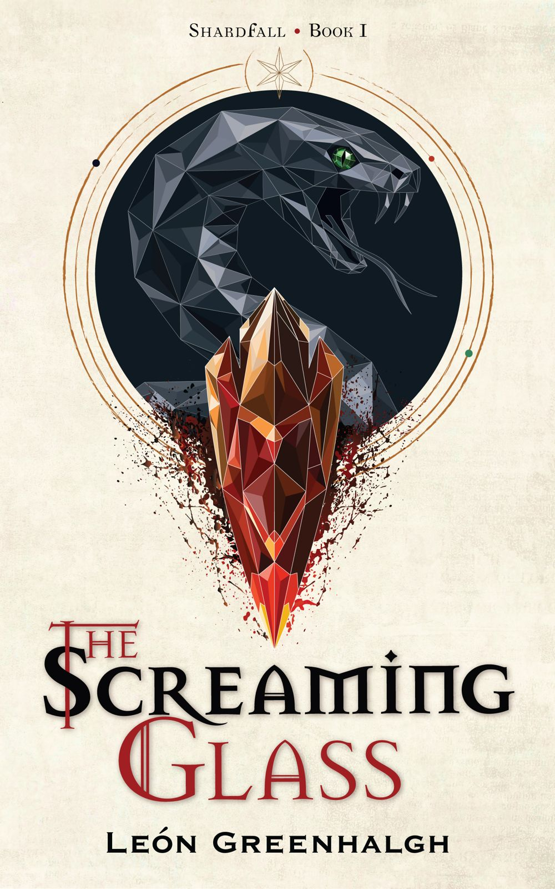

Book One of the Shardfall Series
Available now on Amazon & Kindle Unlimited
Book One of the Shardfall Series
Available now on Amazon & Kindle Unlimited
Fantasy Writer • Creator of Shardfall
Leon Greenhalgh is a British fantasy author and the creator of the Shardfall series. His debut novel, The Screaming Glass, is the first instalment in an epic fantasy saga set in the fractured world of Velora, where the remnants of ancient gods grant extraordinary power at an equally devastating cost.
Originally from the small town of Widnes in the north west of England, Leon later moved to Edinburgh to study Mathematics at university. His fascination with problem solving and intricate systems naturally found its way into fantasy, inspiring the layered world-building, morally complex characters, and a unique magic system where every gift comes with a cost.
His love of fantasy began when his father introduced him to The Hobbit, sparking a lifelong fascination with imagined worlds and the stories they hold. Since then, he has been inspired by authors such as John Gwynne, Brandon Sanderson, and M. L. Wang, whose work helped shape his own approach to epic fantasy.
When he isn't writing, Leon can often be found exploring the Pentland Hills with his wife, Jess, and their Labrador, Penny. Many of the ideas that found their way into The Screaming Glass first took shape on those walks, usually beginning with a simple question, "What if...?" before growing into conversations that lasted for miles.
Leon is currently writing the second novel in the Shardfall series, continuing the story of Velora and the people whose lives have been forever changed by the shattered gods.
Interested in signed copies?
Want to talk fantasy?
Just want to say hello?
I always enjoy hearing from readers, whether you've finished The Screaming Glass, have a question about the world of Shardfall, or simply want to chat about books.
Email me directly at
your@email.com